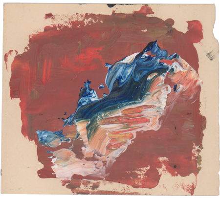
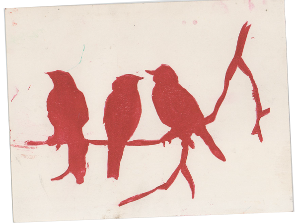

About Me:
I'm Golbarg Khalili and I like to collect details of my days, as a way to remember. I picked up this habit when I was a kid and
I have explored different formats to store these memories. The most efficient way has been junk journaling, and that doesn't mean i have never
had a couple of memento boxes, or that I have never started decorating a corner of my room (oh to be 9 again).

About JUNKZ:
JUNKZ is an addition to my exploration of formats. I find meaning in what is considered disposable , and
with JUNKZ I aim to share my perspective with you. Some of the items have been with me for about a decade, some others
have travelled with me overseas, and some just found me on a random tuesday.
My lived experience becomes more visible to me through JUNKZ, as if I am looking at different
eras in my life all at once.

About what else?
Becoming an ongoing project for a habit like this is inevitable. I have also created
a zine to explain what I know, and explore what I don't. If interested in available prints, email me at golbargk@ocadu.ca